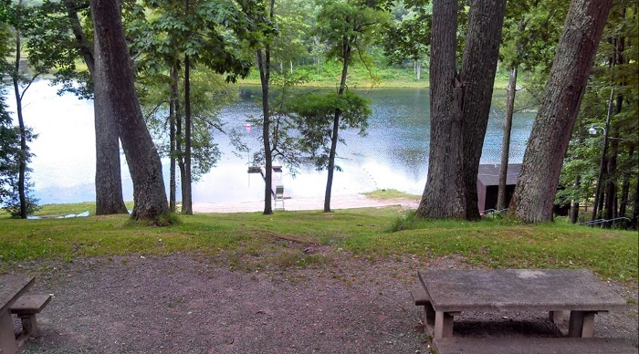
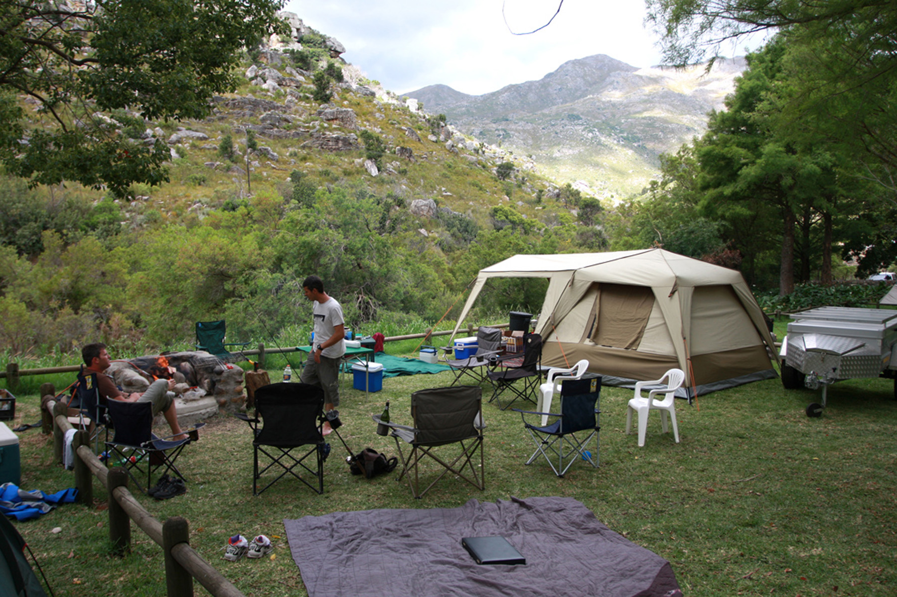

| Home | About | Service | Gallery | Contact |
About Us |
||
|
I declare this world is so beautiful that I can hardly believe it exists.” The beauty of nature can have a profound effect upon our senses, those gateways from the outer world to the inner, whether it results in disbelief in its very existence as Emerson notes, or feelings such as awe, wonder, or amazement. |
I declare this world is so beautiful that I can hardly believe it exists.” The beauty of nature can have a profound effect upon our senses, those gateways from the outer world to the inner, whether it results in disbelief in its very existence as Emerson notes, or feelings such as awe, wonder, or amazement. |
I declare this world is so beautiful that I can hardly believe it exists.” The beauty of nature can have a profound effect upon our senses, those gateways from the outer world to the inner, whether it results in disbelief in its very existence as Emerson notes, or feelings such as awe, wonder, or amazement. |
Services |
|
“I declare this world is so beautiful that I can hardly believe it exists.” The beauty of nature can have a profound effect upon our senses, those gateways from the outer world to the inner, whether it results in disbelief in its very existence as Emerson notes, or feelings such as awe, wonder, or amazement. I declare this world is so beautiful that I can hardly believe it exists.” The beauty of nature can have a profound effect upon our senses, those gateways from the outer world to the inner, whether it results in disbelief in its very existence as Emerson notes, or feelings such as awe, wonder, or amazement. I declare this world is so beautiful that I can hardly believe it exists.” The beauty of nature can have a profound effect upon our senses, those gateways from the outer world to the inner, whether it results in disbelief in its very existence as Emerson notes, or feelings such as awe, wonder, or amazement. |
|
Gallery |
|||
|  |  | ||
CopyRights © 2020 |